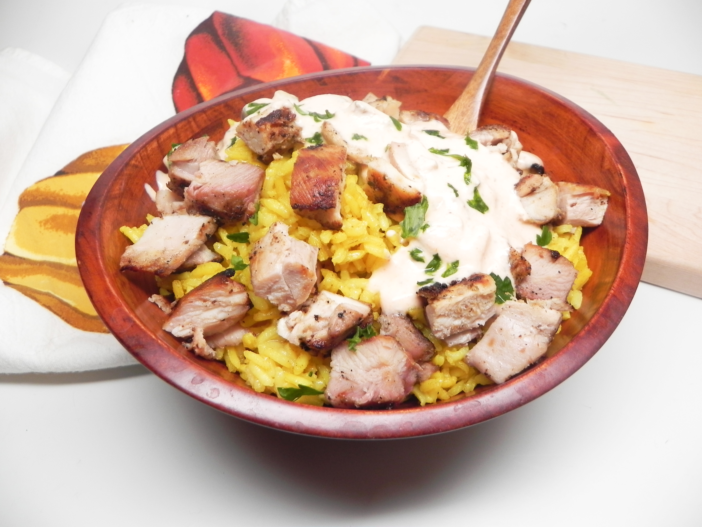

Halal Cart Chicken and Rice

Description
Halal cart chicken is boldly spiced and served with
fragrant turmeric rice and spicy yogurt sauce.
The perfect copycat of NYC street food.
Ingredients
(8 servings, adjust ingredients relative to your desired servings)
Chicken:
- 1/4 cup light olive oil
- 2 tablespoons lemon juice
- 1 1/2 tablespoons coarsely chopped garlic
- 1 tablespoon chopped fresh oregano
- 1/2 teaspoon ground coriander
- kosher salt and ground black pepper to taste
- 2 pounds boneless chicken thighs, trimmed of excess fat
Yogurt Sauce:
- 1 cup Greek yogurt
- 1 tablespoon sriracha sauce, or more to taste
- 2 cloves garlic, minced
Rice:
- 2 tablespoons unsalted butter
- 1/2 teaspoon ground turmeric
- 1/4 teaspoon ground cumin
- 1 1/2 cups long-grain rice
- 2 1/2 cups chicken brother
Directions
- Combine olive oil, lemon juice, garlic, oregano, and corander in a blender; blend until smooth. Season with salt and pepper.
- Place chicken thighs in a resealable plastic bag; pour in blended marinade and seal. Refrigerate for 3 to 4 hours.
- Whisk yogurt, sriracha sauce, garlic, salt, and pepper together to make the sauce. Refrigerate for 1 hour.
- Preheat a skillet over medium-high heat. Remove chicken from the marinade and pat dry with paper towels. Cook skin-side down until well browned, 4 to 5 minutes. Flip and cook until no longer pink in the center, 4 to 5 minutes more.
- Let chicken for 5 to 10 minutes, then chop into chunks.
- Melt butter in a large Dutch oven over medium heat. Add turmeric and cumin; cook and stir until fragrant. Add rice and stir to coat. Cook, stirring frequently, until toasted, about 4 minutes. Pour in chicken broth and season with salt and pepper. Bring to a boil; reduce heat, cover, and cook until broth is absorbed, about 15 minutes.
- Remove Dutch oven from the heat and let stand, covered, for 15 minutes.
- Divide rice and chicken among serving bowls. Drizzle yogurt sauce on top.